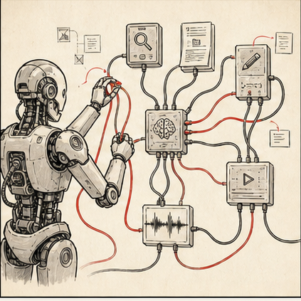

task brief
Цель, входы, выходы, запреты, human approval.
Главная мысль курса: важны не тулзы, а постановка задачи. Агент — это не магический сотрудник, а система: цель, контекст, инструменты, ограничения, проверка и память.

Цель, входы, выходы, запреты, human approval.
Какие инструменты агенту нужны: поиск, диск, монтажка, генератор.
Как связать Claude / ChatGPT с рабочим инструментом через MCP или API.
Что можно автоматизировать позже, а что нельзя.
Поэтому первый навык — не "какую кнопку нажать", а как описать job to be done: вход, выход, критерий качества, риск, владелец решения.
Опиши agent-like сценарий для редакции.
Задача: [что повторяется].
Входы: [какие материалы].
Инструменты: [поиск / диск / монтаж / генерация / таблица].
Выход: [что должно появиться].
Ограничения: [данные, факты, права, tone of voice].
Human gate: [кто утверждает и что проверяет].
Лог: [что сохраняем в hub].
Сделай карту:
1. Base ручной процесс.
2. Opti полуавтоматизация.
3. Advanced агентский сценарий.
4. Что нельзя автоматизировать.Собирает Source Map, drafts, QA table, update proposal.
Читает transcript, предлагает cuts, готовит rough cut notes.
Снимает стиль и генерит промпты под Higgsfield / Kling.
Собирает changelog и повторяющиеся ошибки.
Выбрать повторяющуюся задачу, где больно по времени.
Заполнить agent brief: входы, выходы, инструменты, gate.
Отметить, что делаем сейчас руками, что тестируем позже.
публикацияagent не выпускает без approval
фактыисточник и проверка обязательны
тонредакционный голос не выводится из одного примера
данныевнутреннее не уходит во внешние инструменты без правил